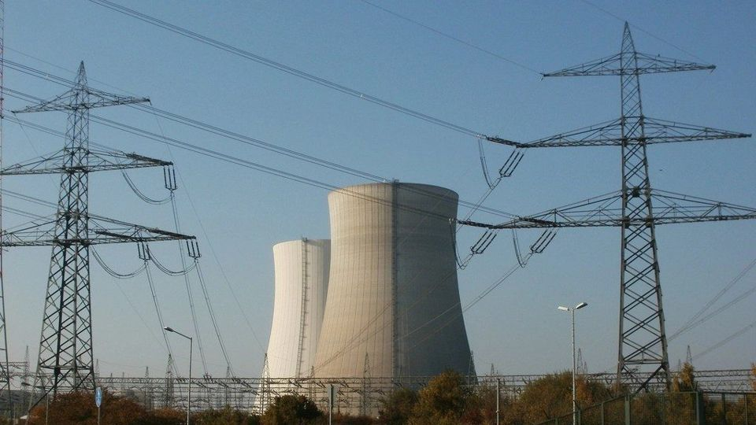

Accident nucléaire : comprimés d'iode et mise à l'abri
En cas d'accident nucléaire, le premier réflexe est la mise à l'abri dans un bâtiment fermé et l'écoute des consignes officielles. Les comprimés d'iode stable ne doivent jamais être pris de sa propre initiative : ils s'utilisent uniquement sur instruction expresse du préfet.

L'essentiel
- Mettez-vous immédiatement à l'abri dans un bâtiment en dur.
- Fermez portes et fenêtres, coupez la ventilation et la climatisation, puis calfeutrez si possible les fentes.
- Écoutez la radio et suivez les instructions du préfet.
Premier réflexe : la mise à l'abri immédiate
En cas d'alerte nucléaire (sirène nationale ou notification FR-Alert), rentrez immédiatement dans le bâtiment en dur le plus proche afin de limiter l'exposition aux rejets radioactifs.
- Calfeutrez le local : fermez portes, fenêtres et volets, et coupez la ventilation, la VMC ou la climatisation.
- Ne vous déplacez pas : n'allez pas chercher vos enfants à l'école (ils sont pris en charge dans le cadre du PPMS) et n'utilisez pas votre véhicule.
- Restez informé : écoutez la radio (ici / France Bleu, France Info) et consultez info.gouv.fr ou les consignes de la préfecture.
Comprimés d'iode stable : uniquement sur ordre du préfet
L'iode stable sature la glande thyroïde et empêche l'iode radioactif éventuellement rejeté de s'y fixer. Il ne protège pas contre les autres éléments radioactifs et doit être administré au bon moment, sur instruction du préfet.
- Attendez l'instruction officielle : ne prenez jamais d'iode préventivement sans ordre explicite du préfet diffusé par les canaux officiels.
- Respectez la posologie : suivez strictement la notice et les consignes sanitaires selon l'âge (nourrissons, enfants, adultes, femmes enceintes).
- Conservez vos boîtes au sec : rangez les comprimés dans votre armoire à pharmacie ou votre kit d'urgence 72 h en vérifiant leur date de péremption.
Rayon de distribution autour des centrales nucléaires
Une distribution préventive et gratuite est organisée autour des centrales nucléaires françaises dans le périmètre du plan particulier d'intervention (PPI).
| Zone géographique | Modalités de mise à disposition |
|---|---|
| Dans le rayon de 20 km autour d'une centrale | Distribution préventive gratuite aux habitants et établissements (via bon de retrait en pharmacie ou campagne dédiée). |
| Au-delà de 20 km | Stocks départementaux gérés par l'État et déployés si nécessaire sur décision des autorités. |
Pour vérifier si votre commune est située dans le périmètre d'un PPI nucléaire, consultez Géorisques ou le site de votre préfecture.
Informations pratiques, sources officielles (ASN / ASNR, IRSN, Ministère de la Santé, info.gouv.fr, SGDSN (Guide Tous responsables, 20/11/2025)). Elles ne remplacent pas les consignes des autorités. En cas d'urgence, appelez le 112 et suivez les consignes de la préfecture, de la radio et de FR-Alert.
Questions fréquentes
Quand faut-il prendre des comprimés d'iode stable ?
Uniquement lorsque le préfet en donne l'ordre officiel à la radio, sur FR-Alert ou via les canaux publics. Une prise trop tôt ou trop tard réduit l'efficacité de la protection.
Qui peut obtenir des comprimés d'iode gratuitement à l'avance ?
Les riverains résidant dans le périmètre de 20 kilomètres autour d'une centrale nucléaire (zone PPI) peuvent retirer gratuitement leurs comprimés en pharmacie partenaire.
Que faire si j'habite à plus de 20 km d'une centrale nucléaire ?
Vous n'avez pas besoin d'acheter d'iode à l'avance. L'État dispose de stocks mobilisables sur tout le territoire en cas de besoin.
L'iode protège-t-il contre tous les risques d'un accident nucléaire ?
Non. L'iode protège uniquement la thyroïde contre l'iode radioactif ; c'est pourquoi la mise à l'abri dans un bâtiment fermé reste essentielle.
À lire aussi


 Le signal d'alerte (sirène)Reconnaître le signal national d'alerte : son modulé, durée, essai mensuel le 1er mercredi à midi, signal de fin d'alerte et complémentarité avec FR-Alert.
Le signal d'alerte (sirène)Reconnaître le signal national d'alerte : son modulé, durée, essai mensuel le 1er mercredi à midi, signal de fin d'alerte et complémentarité avec FR-Alert.